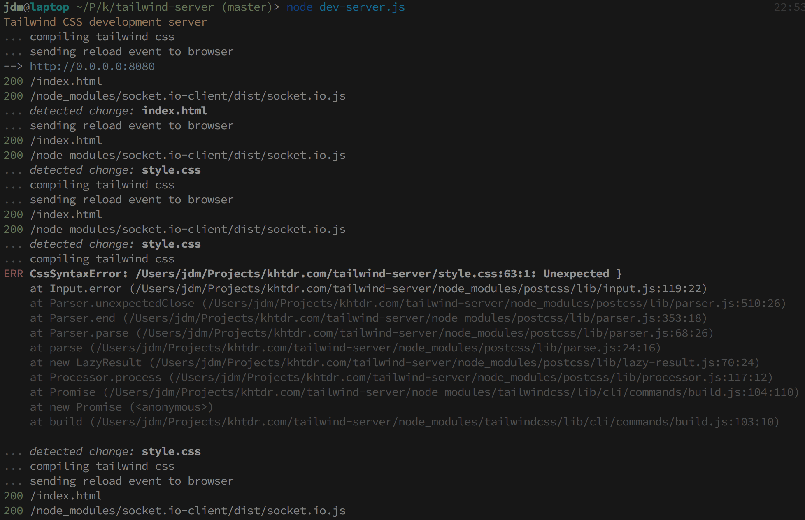

Simple quick way to get started learning and playing with Tailwind CSS
Example output while running dev-server, shown here: 
Features
- No "transpiling" configuration is needed (or used).
- No build tools need to be set up.
- Tiny reactive web server: ~115 lines of code with lots of comments.
-
Minimal dependencies:
chalkfor color,socket.iofor server <-> browser communication,- and
tailwindcssof course.
Installation
Clone the GIT repository, and install the dependencies.
git clone https://github.com/khtdr/tailwind-dev-server.git
cd tailwind-dev-server
yarnRunning
yarn startThen open your browser to: http://localhost:8080
Development
Edit any of the following entry point files:
Changes will be recompiled and automatically refreshed in your browser. Errors will be displayed in the server output.
Create any additional HTML files as needed, using ./index.html as a starting-point reference.
Building
If you like what you see and want to save it and use it, run:
yarn build
And now you can use your newly-built ./tailwind-bundle.css stylesheet however you like.